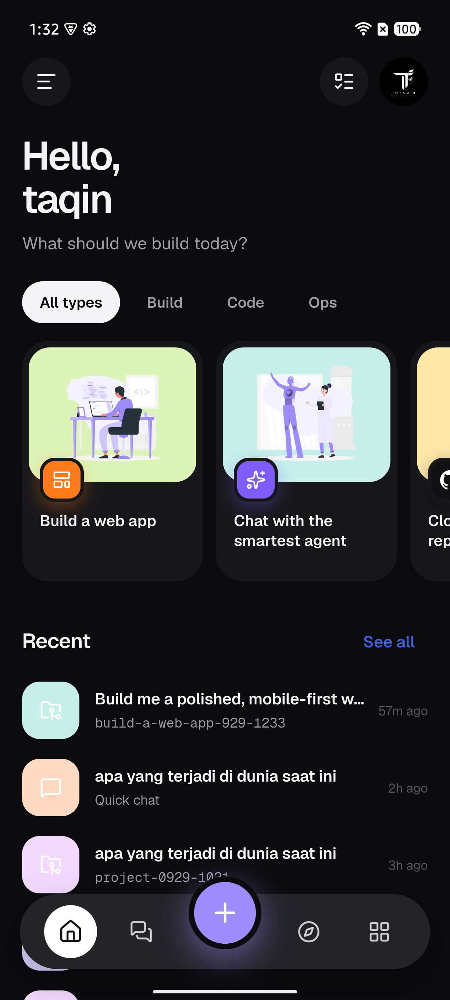
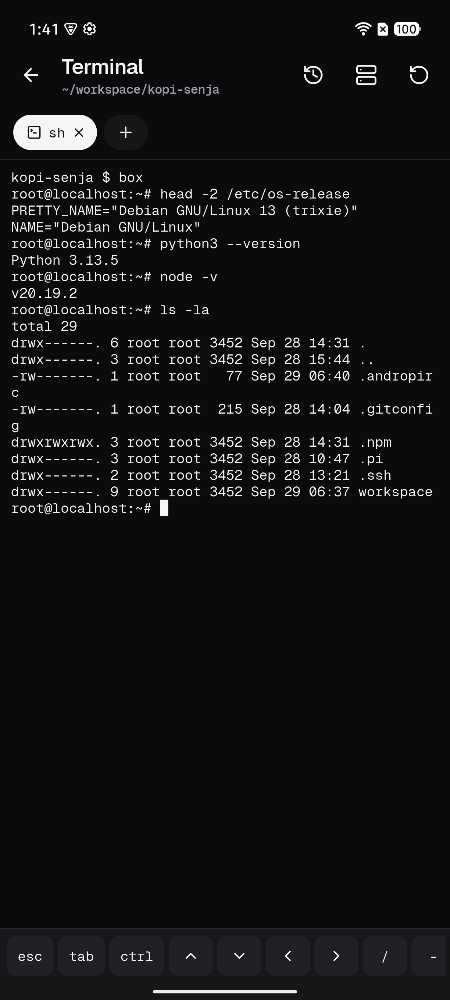
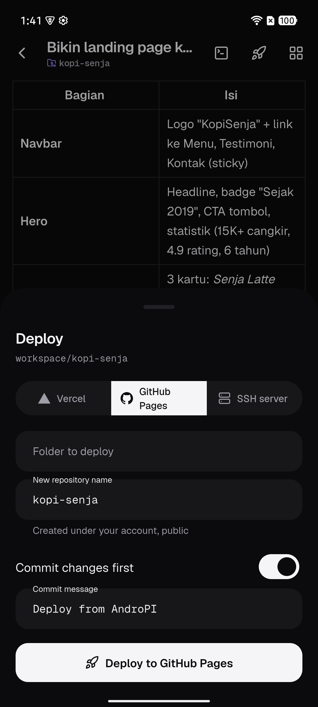

AndroPI
An AI coding agent,
right on your phone
Write, run and deploy code from nothing but Android.

Real-time
Watch the code
get written
Every line appears as pi writes it, along with the tools it uses.

Preview
Your site, built
without a laptop
Open the result right in the app. It updates while pi works.

Linux container
Real Debian.
apt, Python, Node
pi installs whatever your project needs.

Ship it
Deploy with
one tap
GitHub Pages, Vercel, or your own server over SSH.

Build a web app
write index.html ✓
Live
$ apt install python3
GitHub Pages ✓